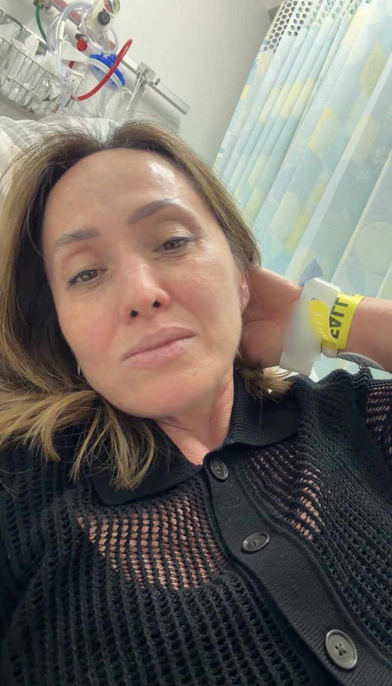
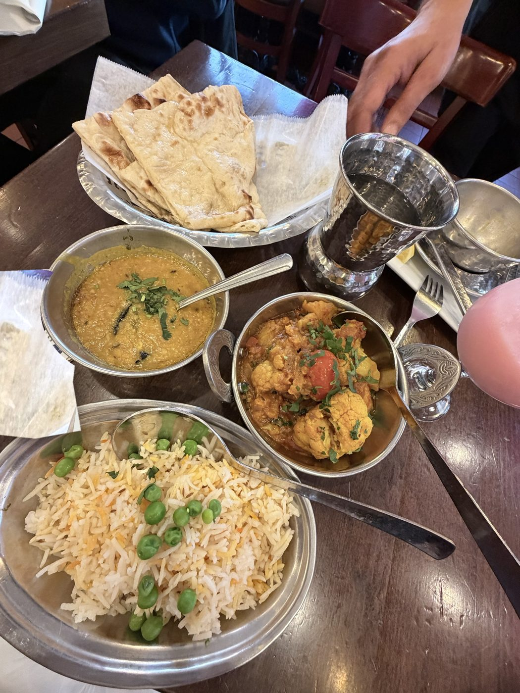

a note · Nov 2026
🌙 Ward 27 · Indifference · One Night
That night in the ER I was somewhere between life and death. Nausea, pain, losing consciousness. I was scared, and I was alone.

ward 27

alone
But to the people around me I was just "ward 27". One more line on a list, one more blood test that could be sent later. It never was.
Indifference

There is a pain that hurts more than the trouble itself: when to others you are not a person, but a function.
To a landlord you are a resource. As long as you pay on time and ask for nothing, you are a "good tenant". Get sick, pay late or ask for something to be fixed, and you become a problem that is easier to replace.
In relationships you can be a resource too. You are loved for being convenient: for your care, money, time, patience. But when you need support yourself, it turns out to be "inconvenient".
And in the ER, your line between life and death becomes one more task on a list. You are scared and in pain, and for them it is just part of the shift.
Why does this happen? People are overloaded, and systems demand speed, not humanity. The mind protects itself and switches compassion off. But the Quran names a deeper cause: the hardening of the heart. "Then your hearts became hardened after that, being like stones or even harder" (2:74). A heart that is not exercised in mercy for a long time turns to stone.
The Quran reminds us that a person is never just a resource: "And We have certainly honored the children of Adam" (17:70). Dignity is given to each of us by the Creator, not by a boss, a partner or a system.
A whole surah, Al-Ma'un, is about indifference. Woe to those who pray to be seen and yet "withhold simple assistance" (107:4–7). Faith that does not reach the person next to you is empty.
To those who think work can be done without compassion: "whoever saves one, it is as if he had saved mankind entirely" (5:32). For a doctor or a nurse this is not just "a task". It is one of the greatest things a person can do.
To those who use the people close to them: Allah placed between spouses "affection and mercy" (30:21), not profit.
To those who take everything from a worker and give back less: "Woe to those who give less than due, who, when they take a measure from people, take in full, but if they give by measure or by weight to them, they cause loss" (83:1–3). The Prophet ﷺ said: "Give the worker his wages before his sweat dries."

a heart that stays soft
Here is what I took away for myself. Other people's indifference does not lower your worth; your worth is with Allah. And help comes "from where you do not expect" (65:3), sometimes from complete strangers who turn out kinder than the people closest to you.
And the path the Quran calls to is steep but clear: to be among those who "advised one another to patience and advised one another to compassion" (90:17).
Don't let someone else's indifference harden your heart too.
P.S. One Night

one dinner
I'm better ☀️
One dinner, and so much that could go wrong.
Nausea, pain, losing consciousness. And a blood test I waited hours for, which never made it to the lab.
On their own, each small thing seems like nothing. Together they can become something very serious.
Today I'm better.

الحمد لله
Alhamdulillah for every breath.
Take care of yourselves.
Quran quotes from the Saheeh International translation of the meanings
← back to writingif this touched you, leave a heart 🤍
tap as many times as you like
thank you, your note reached me 🤍